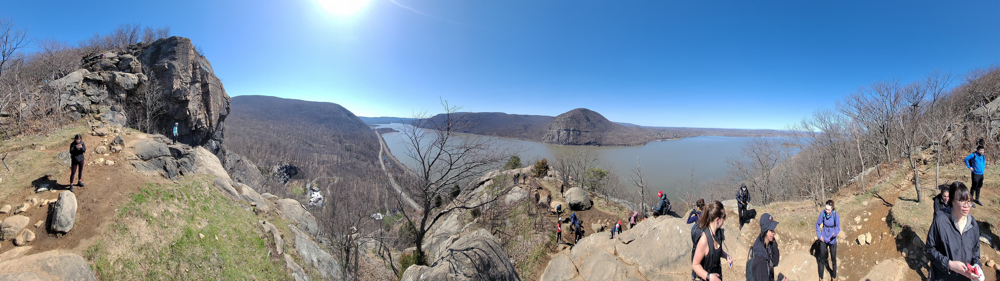
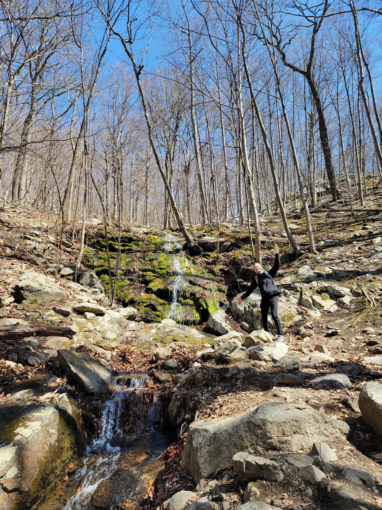
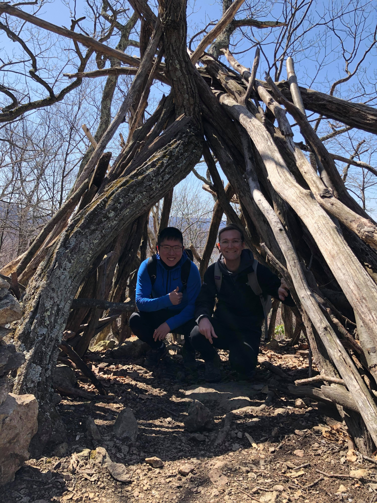

It's been a while since I've written one of these (about a week and a half). So, let's do it, though I do apologize if I can't remember something I did on a specific day.
I don't really remember what happened on each day, but I'll give some updates that I remember happened in the rest of this week.
I redeployed the iOS app. I don't know if I explained the entire thing happening with that. The apple store was having trouble logging in and I was pulling out my hair trying to figure out why. Well, I finally found out that they were pressing the wrong button to log in. They were also rejecting it because it didin't have "Sign In With Apple" capabilities. I sent an explanation to them explaining why I can't do sign in with Apple. Apple's Login Servers aren't Solid compatible. In addition to that I fixed a few bugs.
I also deployed the liqid.host server and tested it with Liqid Cht. It did not work. So, I decided not to encourage people to use Liqid.host yet.
The final big thing was on Friday. We had the Solid networking meeting and a lot of people turned up probably because of the Social Media videos. I alerted them of the new Liqid Chat and a few more joined.
On Friday (I think). I got a message from the president of Digita.ai saying that they might want to pay me to write video scripts for them hahaha!
I worked on two things over the weekend. One, I worked on Liqid Chat's ability to link chats from a Soid Pod's type index. And Two, I started building a new kind of chat that splits chat messages between the various participant's PODs. The main idea was that this would be more secure
On Monday I wrote an update for all those who said they'd be interested in joining me for the project saying that it will take some time to get more funding. I put some thought into what a potential pivot could be and thought that going back to focusing on dev tools and ShapeRepo might be the right approach. Though there is still the qeustion of getting the people who have signed on excited about dev tools rather than the whole vision of the next gen databrwoser.
In the evening I shared chapter 10 of Star Jump with Mindy, and she enjoyed it. She also gave me a few ideas for future chapters.
I think I also did some Liqid Chat bug fixes. At this point, I'm going for no more distractions on things like Liqid.host. Liqid Chat just needs to be as functional as possible. One thing I did find was that Inrupt finally updated their auth library for support silent refreshing. That was the big reason there's such a big back-end on Liqid Chat. That means that I might want to refactor everything to work on the front end, but that will requite a lot of work to do. One feature that seems to be working well is the "Discover Chats" feature, where users can hop into public chats to see what's happening. It gives people some place to go once they log in.
I had a meeting with Tim and we discussed the investor update. Though, he didn't seem super gung-ho with the refocus on dev tools, so that might not mean that I'd be able to raise money from him for it. I also have a meeting with Justin Bingham and the CEO of Digita.ai so I'll float it by them as well and see if they know anyone who can provide funding. I know that to get to the level of dev tools I I want to build, I need to convince someone who loves the idea of Solid that this is worth investing in.
I spent a good part of the rest of the day writing scripts for the next 16 Solid social media videos. The views and interactions have been pretty good. It's definitely doing its job within the Solid community of getting the word out about Solid.
Today was Solid World, and I heard a few good people present. It was great to hear that Next Cloud's server implementation was going well.
I also filmed all the next 14 videos.
I also also put more thought into the pivot back to a dev-tool related product and concluded that I really believe that the databrowser vision can be successful, so if I believe tha, why would I sell myself short with a pivot? Dev Tools are a part of the databrowser, but they alone do not make up the entire vision. No, I've only pitched to three investors and that's not enough yet. There are many more investors out there. Plus, I finally got word back from Ali Partovi and Jenny Wang saying that they didn't invest because they were focusing on other investments, not that they didn't like the product. I'm working hard with Liqid Chat to provde a go-to-market strategy (I'm up to 75 users by the way) and my pitch is stronger every day. The goal now should be to just get in front of more investors to excite them about this vision.
Finally, in the evening, I had some inspiration to write the next chapter of "Baby's First Roadtrip," my "Hitchhiker's Guide to the Galaxy Inspired" novel. It was a fun choose-your-own-adventure! I didn't finish it, but I thought the parts I wrote were pretty nifty.
On Friday I edited the videos, but only got 6 done. I think I was a bit distracted because if I were really focued, it would take me 20 minutes tops to edit a one minute video. But either way, I think I'm going to decrease my upload rate from every day to every Monday, Wednesday, and Friday. That'll make it easier for me to make consistent content. And it might actually help with views as it might not overload people as much. I already took a break for the weekend and no-one has complained
I also reached out to some of the people who follow me on Twitter to see if any of those would lead to investment. But, one connection came to me. Alicia Lau, who now runs the KP Fellows program, reached out to me and I told her I was looking for funding. I thought KP didn't do pre-seeds, but apparently they do, and the fact that it's Charlie Wang and Me (two former KPCB Fellows) helps the case. So, I have a meeting with her on Monday.
In the evening, Ailin and I synced up with Brenda. We went to a great Ukrainian restaurant then to a speakeasy. Though it wasn't much of a speakeasy because we needed to get our drinks outside in the cold due to COVID. After that, we came back to our place so Brenda could meet Licky. We talked for a super long time which caused us to go to bed too late. We wanted to go to bed early beause we planned an early morning.
What a huge day! Ailin and I took the train up to Cold Springs NY, and it was one of the most scenic train rides I've ever had. I had no idea the Hudson river valley was so cool! I loved the cliffs and river mixed with old historic abandoned 19th century factories.
We met up with Jennifer and Andrew to climb "Breakneck Ridge," a popular hiking trail that is notorious for its extremely steep ascent. Here are some pictures:
  
After an exhausting, but rewarding hike, we went back to Cold Springs for lunch and a bit of shopping. I found a great carbon offset app that allows me to record how much beef I eat then pay for carbon offsets! So, I had a hamburger which felt great after the hike. Then it was off to the hotel for a bit of relaxation before dinner, which we had a a 50s diner. Finally, we ended the day with a few board games that Jennifer and Andrew brought. There was one game where Ailin and I were on the same team and we won, but I wasn't a very good team player because I was too distracted with my notes and not listening and communicating what we were doing. Lesson for next time.
On Sunday we slept in until we needed to check out of the hotel, and went to brunch. We were going to do another hike, but the waiter recommended a cat Cafe, and I think Andrew and Jennifer didn't want to hike anymore. So, we went to the cat cafe and it really made me miss Licky.
We said goodbye to our friends and got back on the train back home. Now I'm relaxed and ready for the coming week! I've got videos to edit, bugs to fix, and investors to pitch. Here's looking forward to a good week.